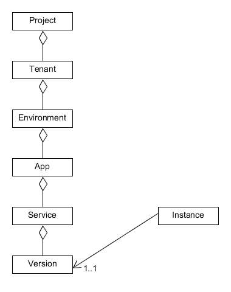

场景描述
进行服务发现的时候，开发者需要了解本微服务能够发现那些其他服务的实例。ServiceComb提供了分层次的实例隔离。
微服务实例分层管理
要了解实例间的隔离层次，首先需要了解ServiceComb定义的一个体系完备的微服务系统结构：

在微服务系统结构中，顶层是“项目”，在项目下分为多个租户，租户中包含多个应用，而每个应用由包含多个环境，即测试和生产环境可以分开。在某个特定应用的特定环境中，包含多个微服务，而一个微服务又可以同时存在多个版本。以上，是所有静态元数据的范畴，某个特定服务的特定版本则包含多个在运行时注册上来的微服务实例，因为服务实例的信息在运行时随着系统的伸缩、故障等原因是动态变化的，所以服务实例的路由信息又为动态数据。通过分层管理微服务的这些数据，也就自然而然的实现了实例之间的逻辑隔离。
隔离层次说明
ServiceComb支持自定义分层配置，满足用户的实例分层管理需求，以下是具体配置说明。
- 应用ID
通过APPLICATIOIN_ID来定义，缺省值为default。微服务在发现实例的时候，缺省只能够被相同APPLICATIOIN_ID下的消费者发现。
- Domain名称
通过cse.config.client.domainName来定义，缺省值为default。作为微服务提供者，用于表明自身所属租户信息。微服务在发现实例的时候，只能被相同租户下的消费者发现。
- 数据中心信息
数据中心包括3个属性：cse.datacenter.name， cse.datacenter.region, cse.datacenter.availableZone。数据中心信息不提供隔离能力，微服务可以发现其他数据中心的实例。但是可以通过启用实例亲和性，来优先往指定的区域或者Zone发消息：
cse:
loadbalance:
serverListFilters: zoneaware
serverListFilter:
zoneaware:
className: org.apache.servicecomb.loadbalance.filter.ZoneAwareServerListFilterExt
这样配置后，客户端在路由的时候，会优先将请求转发到zone/region都相同的实例，然后是region相同，但zone不相同的实例，都不相同的时候，则按照路由规则选择一个。亲和性不是逻辑隔离，只要实例之间网络是联通的，那么都有可能访问到；如果网络不通，则会访问失败。
- 环境信息
在yaml文件里通过service_description.environment来配置，同时支持通过环境变量SERVICECOMB_ENV配置，仅支持以下枚举值 development,testing,acceptance,production，缺省值为""(空)。微服务在发现实例的时候，缺省只能够被相同environment下的消费者发现。
service_description:
environment: production
与华为公有云概念的对应关系
华为公有云有类似的概念，应用、租户、Project、Cluster等，在实际应用的时候，可以分别对应到ServiceComb的应用、租户、Domain、Zone等信息。比如在公有云上如果Cluster共享Project，那么就可以通过zone来对应Cluster，实现集群之间的亲和性访问。